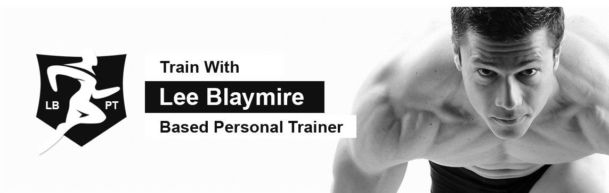

- 


Services
At LBPT, we know how challenging is the ‘no pain no gain’ culture for athletes preparing for any sport and when it comes to elite athletes, this is even more challenging. As a professional or elite athlete, you're challenged every day to perform at the highest levels and compete against the best athletes in the world. Being prepared physically and mentally is essential to gain a competitive edge and enjoy a long, performing career. To help you meet your goals, we offer ‘Ath-elite Programme’ for athletes who are focussed on building strength, power, speed, and endurance specific to their sport. The program encourages and supports athletes competing at a national and international level with free of cost specialized training and guidance from a team of specialists dedicated to help them reach their goals. Before starting this program, a series of assessments are done to measure an individual’s physical state. Once selected, with ‘Ath-elite Programme’, we offer you with the best integrated support under one roof to help you maximize your physical performance. Train yourself to maximize your athletic potential: You can benefit from the online performance training as they help you achieve maximum results. Stay motivated with round-the-clock access to online seminars and workshops: You can also attend our online seminars and workshops to increases your awareness about the recent developments in fitness and health industry. Fuel you body for intense trainings: You get meal strategies and nutrition consultations to support training with pre- and post-training supplementation required for you. The nutrition plans are tailored to maximize gains and help you reach your body composition goals. You also have an option to buy these nutritional plans that can be delivered to your door. A dedicated coach-adviser-mentor that pushes you the next level: All selected members are assigned with a dedicated trainer. This trainer guides you on proper movement, nutrition choices, and recovery techniques that are important for improving your physical performance. Trainers also help you know how to decrease your potential for injury and create sustainable performance during your athletic career and life.